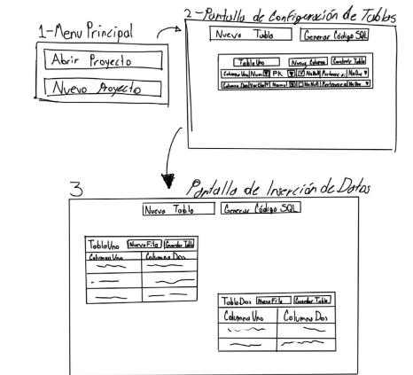
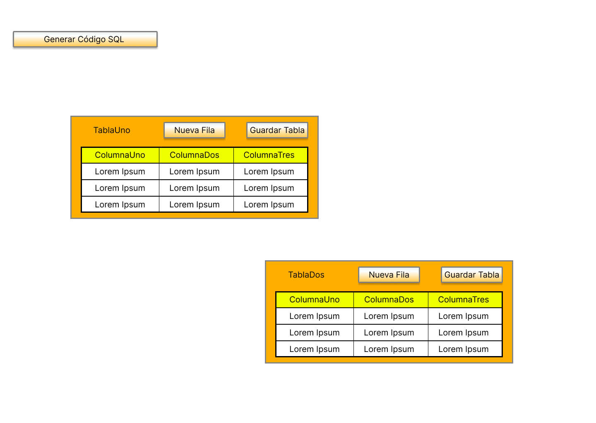
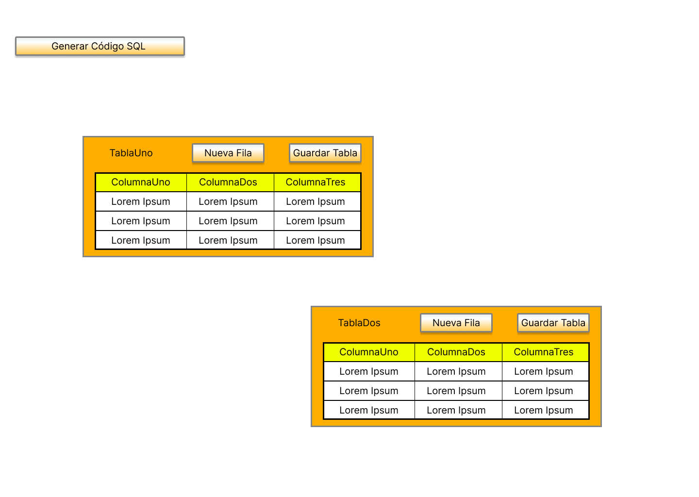

Enfocado en la experiencia completa del usuario con un producto.
Como tareas está la investigación de usuarios, arquitectura de de información, wireframes, pruebas de usabilidad.
Diseñador de Interfaz de Usuario
Enfocado en la apariencia visual del producto.
Diseño de pantallas , iconograafía, colores, estilos visuales.
Diseñador de Interacción
Enfocado en cómo los usuarios interactúan con el sistema.
Tiene como tareas el diseño de flujos, comportamientos del sistema ante la interacción del usuario, prototipos interactivos.
Investigador UX
Enfocado en comprender al usuario a fondo.
Las tareas empleadas son, entrevistas, encuestas, pruebas de usabilidad, análisis de dagtos cualitativos y cuantitativos.
Especialista en Usabilidad
Enfocado en evaluar la facilidad de uso del producto.
Pruebas A/B, análisis heurístico, pruebas con usuarios.
Diseñador UX Móvil
Enfocado en las experiencias en dispositivos móviles.
Adaptabilidad, gestos táctiles, rendimiento en pantallas pequeñas.
Diseñador de Prototipos o Prototipador UX
Enfocado en crear prototipos funcionales de interfaces.
Prototiposde baja y alta fidelidad, simulaciones interactivas.
El Objetivo del Proyecto
Se trata de una aplicación, con la finalidad de ayudar a los desarrolladores web que no tengan mucho conocimiento SQL.
El Público Objetivo
Desarrolladores web sin conocimiento SQL, o conocimiento casi nulo.
Los principales desafíos o limitaciones
Que el usuario pueda diseñar tablas, relaciones y claves foráneas sin saber SQL. Convertir las acciones gráficas (como arrastrar, conectar, establecer propiedades) en instrucciones SQL válidas y eficientes. Mantener la consistencia bidireccional entre lo visual y lo lógico al importar/exportar proyectos SQL o estructuras complejas. Leer un archivo .sql, interpretarlo en estructura visual, e insertar daos de forma segura y comprensible. Diselar el generador de scripts de forma flexible para adaptarse a diferentes dialectos SQL. Crear una interfaz amigable, intuitiva, con ayuda contextual que oriente al usuario sin neceisdad de consultar documentación técnica.
Los detalles del estudio de investigación
Se estuvieron buscando personas candidatas para probar la usabilidad del diseño de este proyecto, se obtuvieron tanto personas que se ven involucradas en el desarrollo web, como otras que no. Los resultados son variados.
Se ubicaron puntos de dolor como: Algunos usuarios no saben ni qué es una base de datos en SQL o MySQL. Algunos usuarios presentan problemas a la hora de desarrollar una base de datos, como no saber ni cómo definir una tabla. Según algunos de las personas, un problema constante que tenían era cuando había que definir una PK o FK, puesto que algunos usuarios no entienden las relaciones entre tablas.
Los conceptos de diseño iniciales
Propósito Principal
Crear una herramienta visual que permita a usuarios diseñar bases de datos relacionales y generar automáticamente el código SQL necesario para construir dichas bases de datos en un motor como MySQL.
Interfaz Gráfica como Medio Central
El usuario puede crear y manipular gráficamente: tablas, columnas, claves primarias y foráneas, relaciones entre tablas. Esta interfaz se convierte en el punt de partida para generar scripts SQL sin necesidad de escribir código.
Generación de Scripts SQL
El sistema traduce lo que el usuario construye gráficamente en instrucciones SQL válidas y completas. El enfoque se centra en que el script gnerado funcione directametne en MySQL sin requerir modificaciones manuales.
Compatibilidad con Archivos de Proyecto
El sistema permite abrir archivos .sql existentes para analizarlos y representarlos gráficamente. También se pueden guardar los esquemas como proyectos, permitiendo edición y reutilización posterior.
Audiencia Objetivo
Estudiantes y profesionales en formación. Personas que no dominan el SQL pero necesitan generar estructuras de bases de datos. Usuarios que aprenden bases de datos relacionales mediante visualización y práctica.
Bocetos o esquemas de página
A continuación se presentan los bocetos en papel escaneados.

Los resultados de pruebas de usuario
Tras haber realizado las pruebas de usuario con el diseño de baja fidelidad basados en el boceto, se obtuvieron resultados como que el diseño es limpio, requiere unos retoques, es orientado UNICAMENTE para desarrolladores web, también que es un poco confuso a la hora de configurar, tal vez podría irle bien un nuevo color, es algo básico, pero práctico.
Maquetas o prototipos de alta fidelidad de diseños finales y pulidos
A continuación se presentan los prototipos de alta fidelidad, que son los diseños finales y pulidos.
GenScriMySQL representa una solución innovadora para la creación de bases de datos relacionales a través de una experiencia visual e intuitiva. Desde sus conceptos iniciales, el proyecto ha buscado simplificar el proceso de diseño y generación de scripts SQL, eliminando barreras técnicas para estudiantes y profesionales en formación.
Uno de los aspectos clave que marcarán la diferencia en su impacto y adopción será el enfoque en diseño móvil. Hoy en día, la accesibilidad y portabilidad son fundamentales; por ello, trasladar esta experiencia gráfica a dispositivos móviles permitirá que los usuarios puedan construir y editar esquemas de bases de datos desde cualquier lugar en cualquier momento. La interfazdebe priorizar interacciones táctiles simples, componentes adaptativos y navegación clara, sin sacrificar funcionalidades clave como la definición de relaciones o la validación en tiempo real.
En resumen, GenScriMySQL no solo debe ser una herramienta potente y educativa, sino también responsive y centrada en el usuario móvil, para verdaderamente democratizar el diseño de bases de datos en cualquier entorno.


 
